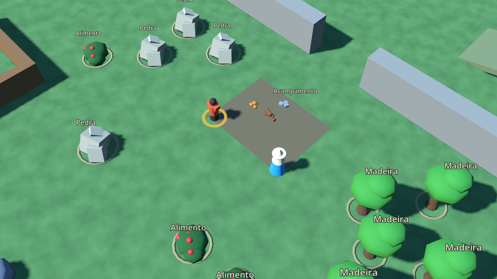

24
Madeira14
Pedra18
Alimentos
+
1ª Geração · Proposta T5
Alden
Fundador · Controle Pessoal
Mochila: 8 / 20 peso (40%)
4 madeiras · 4,0 m/s
Liberar · P-RUX-2
Brena
Fundadora · Comunitário
Estado: Coletando madeira
Casa Principal · 2 fundadores
Árvore Viva (Proposta T5)